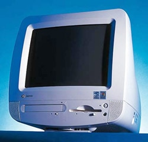
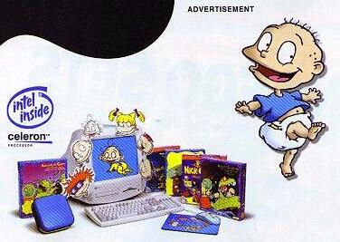
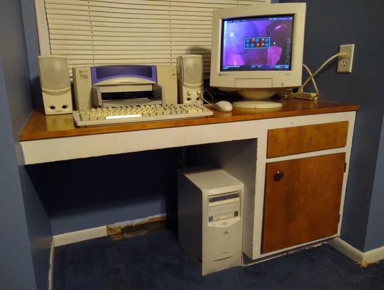
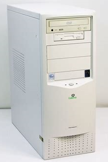
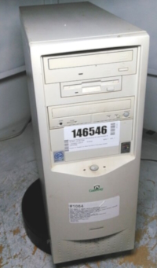
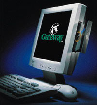

Gateway was founded in 1985 by Ted Waitt & Mike Hammond, It went by the name TIPC Network between the years of 1985 to 1987, before being renamed Gateway 2000 in 1987 to 1998. In 1998, the company would rename itself again to just Gateway. Instead of selling computers to customers via stores, Gateway would sell computers through alternative means such as Mail-order, Telephone order and eventually, through the internet. Gateway would eventually start a Retail chain where they would sell their computers, with demonstration units and tutorial classes available for new owners.
Gateway was known for offering highly customisable computers, with a wide range of parts to choose from, and often had software bundles available such as Educational Titles, Games and Productivity software.
The Gateway Astro was introduced in 1999 as a computer intended for families and first time computer owners. It's main competition was the Apple iMac and eMachine eOne. Because it was focused on families and first time computer owners, Optional software includes:
The Astro line was discontinued in 2000, A year after it's release.
| Photo | Machine | Year Of Introduction | CPU | RAM | Hard Drive | Modem/Networking | Cache | Sound Card | GPU | Bundled Operating System | Bundled Software | Notes |
|---|---|---|---|---|---|---|---|---|---|---|---|---|
|  | Astro | 1999 | Intel Celeron (400mhz, Socket 370) | 64MB | 4.3GB | 56k | Unknown | Unknown | Intel IGP | Windows 98 Second Edition | Microsoft Works Suite 2000 Optional:
|
There was apparently a Blues Clues edition too, but I cannot find a specs sheet nor advert for it. |
|  | Astro Rugrats Edition | 1999 | Intel Celeron (400mhz, Socket 370) | 64MB | 4.3GB | 56k | Unknown | Unknown | Intel IGP | Windows 98 Second Edition | Microsoft Works Suite 2000 The Rugrats Movie Activity Challenge(Rugrats Edition only) Rugrats Adventure Game (Rugrats Edition only) Rugrats Paint Shop (Rugrats Edition only) Rugrats Mystery adventures (Rugrats Edition only) Nick-O-Matic Design Factory (Rugrats Edition only) Nickelodeon Accessory CD with Games and Screensavers (Rugrats Edition only) |
There was apparently a Blues Clues edition too, but I cannot find a specs sheet nor advert for it. |
The essential line was introduced in 1999. It was intended for families, students and home offices. The models were designed to be cheap, and often were given away for free with the usage of rebates. The line was discontinued in 2001.
| Photo | Machine | Year Of Introduction | CPU | RAM | Hard Drive | Modem/Networking | Cache | Sound Card | GPU | Bundled Operating System | Bundled Software | Notes |
|---|---|---|---|---|---|---|---|---|---|---|---|---|
| Unable to find image | 400 Deluxe | 1999 | Intel Celeron (400, Socket 370) | 32MB | 6.8GB | 56k Modem | 128KB | Sound Blaster AudioPCI 64D | Generic AGP | Windows 98 Second Edition | Microsoft Office 2000 Small Business, Quicken Basics 99 |
Basically no infomation online about this computer. |
| Unable to find image | 450 Deluxe | 1999 | Intel Pentium III (450MHz) | 64MB | 6.8GB | Unknown | 512KB | Unknown | Unknown | Unknown | Unknown | |
| Unable to find image | 400c SE | 1999 | Intel Celeron (400, Socket 370) | 32MB | 4.3GB | Unknown | Unknown | Unknown | Unknown | Unknown | Unknown | |
 Thanks to /u/thatvhstapeguy for the image |
400 | 1999 | Intel Celeron (400, Socket 370) | 32MB | 6.8GB | Unknown | Unknown | Unknown | Unknown | Unknown | Unknown | |
| Unable to find image | 450 | 1999 | Intel Pentium III (450MHz) | 64MB | 6.8GB | Unknown | Unknown | Unknown | Unknown | Unknown | Unknown | |
| Unable to find image | 633c Deluxe | 2000 | Intel Celeron 633MHz | 64MB | 7.5GB | Unknown | Unknown | Unknown | Unknown | Unknown | Unknown | |
| Unable to find image | 733 Deluxe | 2000 | Intel Celeron 733MHz | 64MB | 7.5GB | Unknown | Unknown | Unknown | Unknown | Unknown | Unknown | |
| Unable to find image | 663c | 200 | Intel Celeron 633MHz | 64MB | 7.5GB | Unknown | Unknown | Unknown | Unknown | Unknown | Unknown | |
| Unable to find image | 733 | 2000 | Intel Celeron 733MHz | 64MB | 7.5GB | Unknown | Unknown | Unknown | Unknown | Unknown | Unknown |
Introduced in 1999, The performance line was designed as a line using higher end components.
| Photo | Machine | Year Of Introduction | CPU | RAM | Hard Drive | Modem/Networking | Cache | Sound Card | GPU | Bundled Operating System | Bundled Software | Notes |
|---|---|---|---|---|---|---|---|---|---|---|---|---|
|  | 500 Deluxe | 1999 | Intel Pentium III 500MHz | 64MB, 384MB Max | 20GB | 3COM US Robotics 56K PCI Voice Modem | 512KB | Sound Blaster Live! Value, With Digital Audio Output | 16MB AGP Graphics Accelerator | Microsoft Windows 98 Second Edition | Norton Anti-Virus Software, Microsoft Office 2000 Small Business | |
| Unable to find image. | 550 Deluxe | 1999 | Intel Pentium III 550MHz | 128MB, 384MB Max | 20GB | 3COM US Robotics 56K PCI Voice Modem | 512KB | Sound Blaster Live! Value, With Digital Audio Output | 16MB AGP Graphics Accelerator | Microsoft Windows 98 Second Edition | Norton Anti-Virus Software, Microsoft Office 2000 Small Business | |
| Unable to find image | 600 Deluxe |
1999 | Intel Pentium III 600MHz | 128MB, 384MB Max | 20GB | 3COM US Robotics 56K PCI Voice Modem | 512KB | Sound Blaster Live! Value, With Digital Audio Output | 16MB AGP Graphics Accelerator | Microsoft Windows 98 Second Edition | Norton Anti-Virus Software, Microsoft Office 2000 Small Business | |
|  | 700 Deluxe | 1999 | Unknown | Unknown | Unknown | Unknown | Unknown | Unknown | Unknown | Unknown | Unknown | |
| Unable to find image | 700XL | 1999 | Intel Pentium III 700MHz | 128MB, 384MB Max | 27.3GB | 3COM US Robotics 56K PCI Voice Modem | 512KB | Sound Blaster Live! Value, With Digital Audio Output | Nvidia Geforce 256 With TV out and DVI-D | Microsoft Windows 98 Second Edition | Norton Anti-Virus Software, Microsoft Office 2000 Small Business |
The profile line was introduced in 199x, It was intended as a higher end all in one computer. The final model was the 5.5, released in 2005
| Photo | Machine | Year Of Introduction | CPU | RAM | Hard Drive | Modem/Networking | Cache | Sound Card | GPU | Bundled Operating System | Bundled Software | Notes |
|---|---|---|---|---|---|---|---|---|---|---|---|---|
|  | Profile 2 433 CS | 1999 | Intel Celeron (433mhz, Socket 370) | 64MB | 10GB | 10Mb/s Ethernet, 56k Modem | 128KB | Sound Blaster (Unknown model) | Intel IGP | Windows 98 Second Edition | Microsoft Works Suite 99 Norton AntiVirus 5.0 Optional:
|
Basically no infomation online about this computer. |
| Profile 2 500CX | 1999 | Intel Celeron (500mhz, Socket 370) | 64MB | 20GB | 10Mb/s Ethernet, 56k Modem | 128KB | Sound Blaster (Unknown model) | Intel IGP | Windows 98 Second Edition | Microsoft Works Suite 99 Norton AntiVirus 5.0 Optional:
|
Basically no infomation online about this computer. |